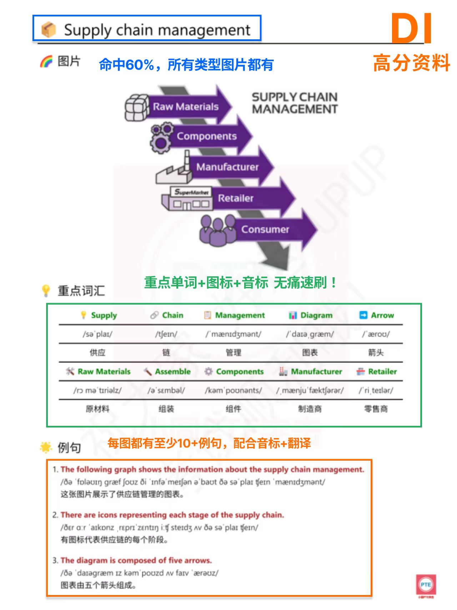
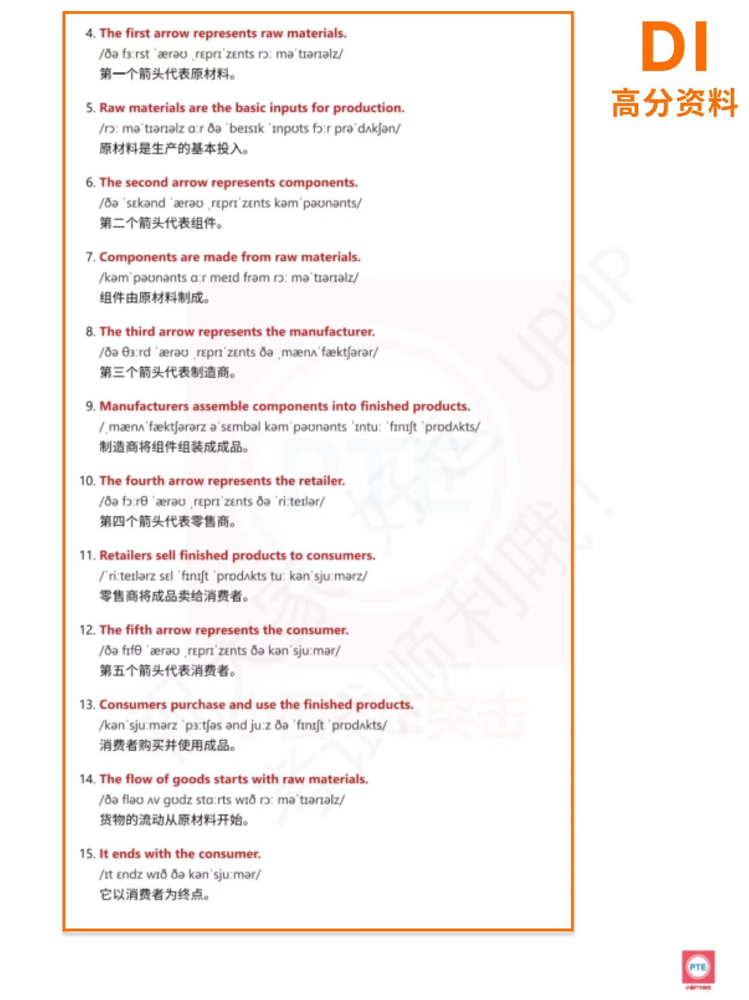
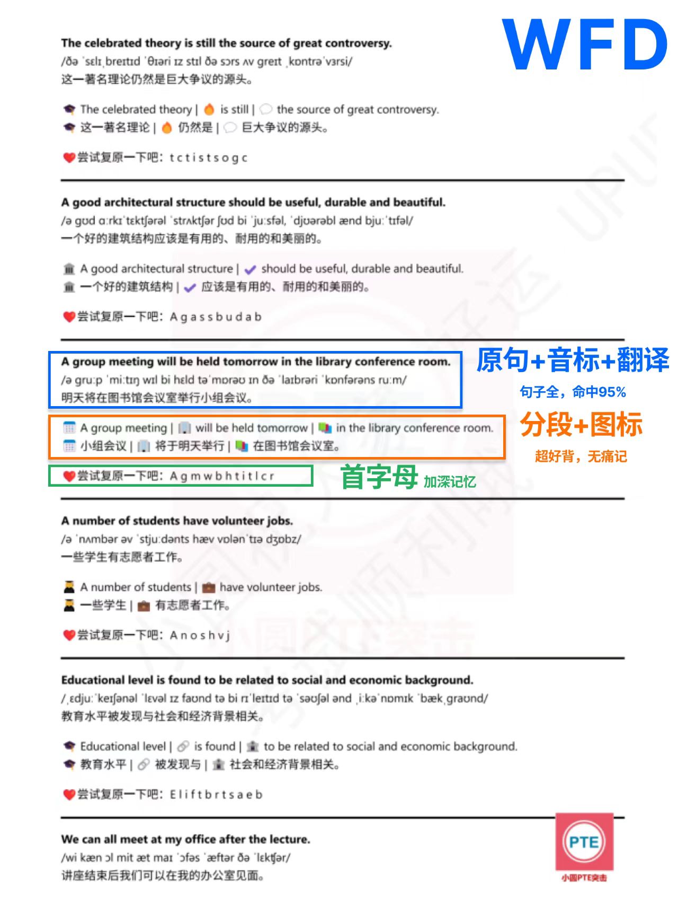
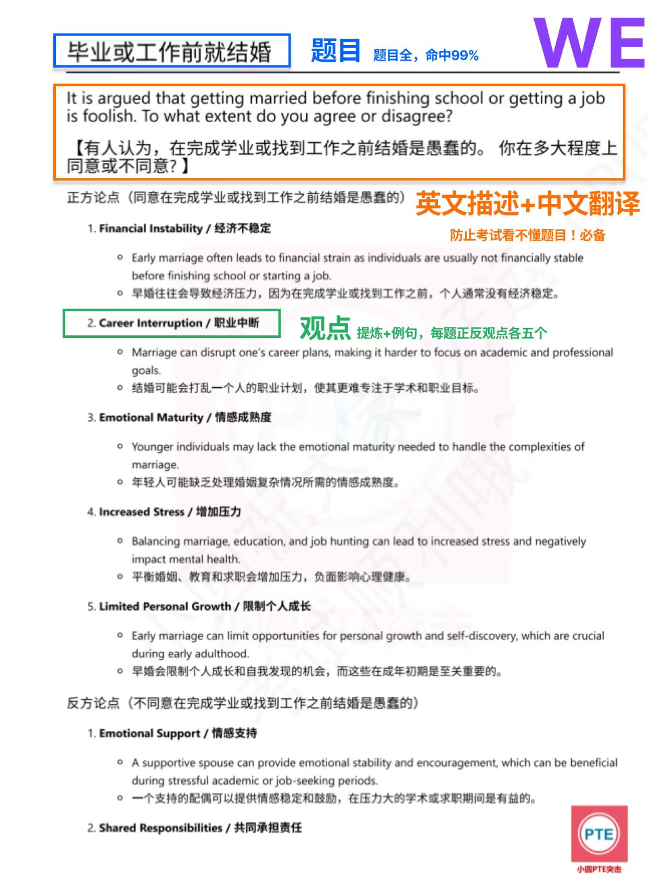
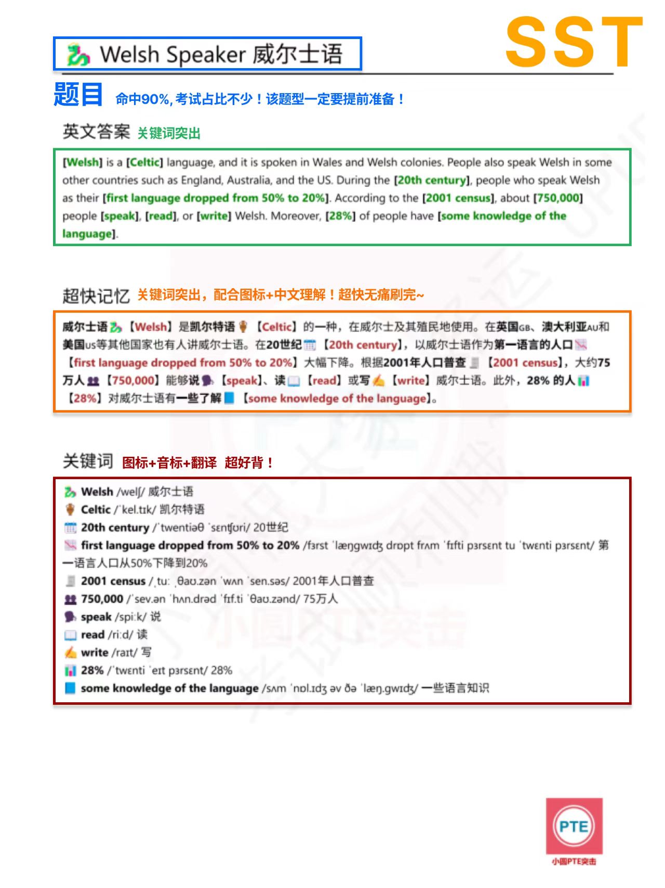
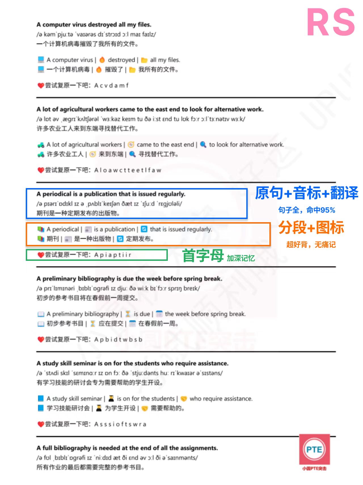

迅速判断图片类型、主题、最大值、变化和显著细节。
小圆 PTE 突击专注PTE突击，助力每个梦想
五项合集DI · WFD · WE · SST · RS
哇，五项 PTE 突击宝藏一次集齐！
五大题型一次集齐，接下来的每一步努力都算数。
DI 看图口述WFD 听写冲刺WE 议论文写作SST 听力总结RS 复述句子
先看清这道题
25 秒看图，40 秒开口。
关键是抓主旨、选细节、说顺。
DI 是口语题型：屏幕出现图片 → 准备时间快速梳理信息 → 用英语完整描述，答案只录一次。清晰的结构、平稳的语速和紧扣图片的内容，远比临场硬塞复杂词更拿分。
按"总览—重点—补充—总结"组织，避免想到哪说到哪。
稳定开口、连贯表达，建立可重复的答题节奏。
真实截图
DI 资料内页展示
连续两页展示：图片 → 10+ 重点词（音标 + 图标 + 翻译）→ 10+ 例句（音标 + 翻译）的实际排版。


本商品仅提供 PDF 图文资料，不包含音频、视频、录音或口语批改服务。
资料里有什么
图+词+句
彩色图标+英文+音标+翻译
- 看全类型图片覆盖
流程图、柱状图、饼图、地图、表格等。 - 认10+ 重点词 · 图标绑定
每个单词配图标、音标和中文翻译，减少临场卡词。 - 读单词 & 例句全程注音
重点词和练习句都配有音标和中文翻译，确认发音和意思再开口。 - 说10+ 例句可替换训练
每图配 10+ 条练习句，从单句练到完整描述，形成自己的表达。
建议这样冲
练习方法
先练"会说"，再练"限时说"
第 1 轮
按图片类型刷重点词
看图标读单词，确保常见图表词能立刻说出口。
第 2 轮
模仿例句，替换关键词
保持句型骨架，只替换数字、对象、趋势和顺序。
第 3 轮
25 + 40 秒限时模拟
开口后优先保证连贯，保持专注，注意发音正确性。
先看清这道题
听一遍，写完整。
每个正确单词都值得抢回来。
WFD 位于听力部分，是PTE考试最后一题，一定要留足时间。注意：每个句子只播放一次，需要按听到的内容准确输入。它同时考查听力与写作，每按顺序写对一个单词得一分，因此听辨、词序和拼写都很关键。
句子不长，信息密度高；听到后要迅速保留关键词和语序。
训练目标是边听边抓骨架，而不是反复依赖回放。
能多写对一个词，就多守住一个得分点；完整度与准确度一起练。
资料长这样
从“看懂”到“默出来”，
每一步都有抓手。
参考商品资料页的训练结构，一条句子拆成五层信息，适合快速过题与重复复习。
A group meeting will be held tomorrow in the library conference room.
① 原句 + 音标 借助音标确认读音
② 中文翻译 先理解，再记忆
③ 图标分段 按意义组块记住长句
④ 首字母 A g m w b h t i t l c r
- 听原句与音标配套
解决“认识单词却没听出来”的卡点。 - 懂中文翻译辅助理解
有语义支撑，记忆更牢，词序更自然。 - 拆图标 + 意群分段
把长句拆成几个可抓住的小块。 - 默首字母主动回忆
从“看着会”推进到真正能复现。
真实截图
WFD 资料内页展示
原句、音标、中文翻译、分段图标与首字母提示都在同一页呈现。

本商品仅提供 PDF 图文资料，不包含音频、视频、录音或跟读服务。
为什么适合突击
用更短的路径，练到考场需要的动作。
命中率超高的高频题库，支持打印下来背，减少手机干扰。
文字、发音、中文、图标和首字母一起上，降低记忆难度。
遮住原句，只看首字母复述；再回看拼写，形成闭环，避免“好像会了”。
建议这样冲
三轮循环，比从头看到尾更有效。
第 1 轮
快速过题，标记陌生句
先理解句意、熟悉发音，把卡壳的词和意群圈出来。
第 2 轮
图标分段，首字母复现
遮住原句，根据分段和首字母完整说出或写出句子。
第 3 轮
只查错题，专攻拼写
集中回炉遗漏词、词序和拼写错误，把时间留给薄弱点。
先看清这道题
20 分钟，写一篇 200–300 词议论文。
WE 要求围绕给定话题完成有立场、有论证的英文作文。时间里要完成审题、构思、写作与检查；清楚回应题目、组织段落、发展观点，并控制语言错误，是稳定发挥的核心。
构思不能拖太久，需要快速选定立场和两组主体论点。
内容要充分，同时避免为了凑字数重复表达。
围绕题目建立立场，用解释和例子支撑观点。
真实截图
WE 资料内页展示
英文题目、中文翻译、正反观点、提炼说明与例句的实际排版。

本商品仅提供 PDF 图文资料，不包含视频课程、音频讲解、录音或作文批改服务。
资料长这样
先解决“写什么”，
再练“怎么写得完整”。
参考商品资料页：题目提供英文描述与中文翻译，正反两方各整理多组观点，适合快速搭建自己的素材库。（模板需自备，避免和他人冲突）
Getting married before finishing school or getting a job
审题 英文题目 + 中文翻译，避免跑题
正方 Financial instability · Career interruption · Increased stress
反方 Emotional support · Shared responsibilities
展开 观点 + 英文解释 + 中文理解
- 读题目双语呈现
先准确理解争议点和作答范围。 - 选正反观点成组整理
快速选择最熟悉、最好发展的论点。 - 展提炼与例句配套
避免主体段只有一句观点，没有解释。 - 组形成个人素材库
跨话题复用因果、影响和举例逻辑。
为什么适合突击
考试不是等灵感，是快速调用练熟的观点链。
双语题目帮助确认立场范围，减少理解偏差和离题风险。
正反角度一起准备，遇到 agree/disagree 题更容易选择。
观点、原因、影响和例句连成链，主体段不再干瘪。
建议这样冲
不要整篇死背，练会“审题—选点—展开”。
5 分钟
审题+打模板
将自己提前复习好的模板打上去，确保没有错误。脑海中思考2组正反观点。
15 分钟
填充观点
关键10分钟，把观点填充进自己的模板，扩成完整段。
20 分钟
检查
最后5分钟，核对字数、拼写、主谓一致和是否回应题目。
先看清这道题
听音频，提炼成 50–70 词摘要。
SST 同时考查听力与写作。你需要从这段音频中抓住主旨与必要支撑点，再在规定时间内写成精炼摘要；内容、格式、语法、词汇和拼写都影响表现。
既要覆盖主旨与重点，也要避免塞入无关细节。
听完后组织信息、写作并留出时间检查。
能听出层次，也要用准确、连贯的英语重新表达。
真实截图
SST 资料内页展示
完整答案、关键词高亮、中文图标理解及关键词表的实际排版。

本商品仅提供 PDF 图文资料，不包含音频、视频、录音或听力播放服务。
建议这样冲
SST 备考五步法，
每一步都有抓手。
第 1 步
找到正确的高频题
不要盲目相信送的资料，很多已过期。直接用🐛或者小圆 SST 突击资料，复习的每分钟都不白学。
第 2 步
速刷高频 · 先中文后英文
考前至少过一遍高频题。优先看中文了解大意，再看对应英文。用资料里的【超快记忆】部分，英文关键词标注在中文旁+小图标，加深印象不枯燥。
第 3 步
记忆关键词 · 会认会拼会读
每个高频的关键词都要记下来，不仅要认识，还要会拼写、会发音（听到要认识）。用资料里的【关键词】部分，带音标和小图标辅助背诵。
第 4 步
考前准备 · 简易模板
准备一个简易模板（可网上搜或自行微调）。例如：The speaker talks about [关键词]. At the beginning... After that... In addition... In conclusion...
第 5 步
考试时保持专注
准备阶段深呼吸，保持专注进入听力状态，听时重点抓语气强调处（Actually... / Important to note...），稳住节奏不慌。
为什么适合突击
把一大段音频，压缩成能记住的几个锚点。
只练真正在考的题，不浪费时间在已下架的旧题上。
超快记忆先建立中文逻辑，再记英文关键词，减少死记硬背。
避免“好像会了”，但因为拼写错误不得分的情况。
资料长这样
英文原文 → 超快记忆 → 关键词
每道题按三层结构组织：
英文原文（完整答案+关键词高亮）→ 超快记忆（中英结合+图标串联）→ 关键词（单词+音标+中文翻译+图标辅助）。
英文原文 → 超快记忆 → 关键词
英文原文
完整答案，关键词高亮，看清摘要骨架
完整答案，关键词高亮，看清摘要骨架
超快记忆
中英结合 + 图标串联，快速理解大意
中英结合 + 图标串联，快速理解大意
关键词
单词 + 音标 + 中文翻译 + 图标辅助背诵
单词 + 音标 + 中文翻译 + 图标辅助背诵
- 读英文原文 · 完整答案
先读一遍完整摘要，关键词高亮，快速看清内容骨架。 - 记超快记忆 · 中英图标
中文翻译旁标注英文关键词+小图标，理解逻辑再记忆。 - 背关键词 · 音标翻译
单词配音标、中文释义和图标，会认、会拼、会发音。 - 套模板串联 · 写出摘要
用自己的模板把关键词串成完整摘要，控制 50–70 词。
先看清这道题
听一个句子，
马上用自己的声音重复出来。
RS 同时考查听力与口语。音频只播放一次，结束后麦克风打开，需要立即、清楚地复述；保持自然语速和连贯节奏，通常比为了追求每个词而频繁停顿更稳。
信息一闪而过，要快速捕捉重音词、语块和句子节奏。
提示音后立即开口，在录音结束前清楚说完。
内容+发音+流利度，是考核的三大项。
真实截图
RS 资料内页展示
原句、音标、翻译、意群分段与首字母提示的实际图文排版。

本商品仅提供 PDF 图文资料，不包含音频、视频、录音或跟读服务。
资料长这样
长句切成块，
记忆就有落脚点。
参考商品资料页：每句提供原句、音标、中文翻译，再用图标和竖线标出意群，最后用首字母做主动复述。
A computer virus destroyed all my files.
原句 + 音标 先对齐发音与文字
中文翻译 一个计算机病毒摧毁了我所有的文件。
图标分段 💻 A computer virus ｜ 🔥 destroyed ｜ 📁 all my files
首字母提示 A c v d a m f
- 听音标辅助
发现连读、弱读和容易误听的声音。 - 切按意群而非逐词记
工作记忆压力更小，复述更连贯。 - 连图标连接句意
用画面记住动作和对象，减少无意义背诵。 - 说首字母触发复述
逐步减少提示，辅助背诵。
为什么适合突击
练习“听到—记住—说出”，感觉一直原地踏步？
把长句切成 2–4 个语块，优先保住句子骨架和关键词。
集中精力刷完，突击提分，听到长难句也不怕。
首字母提示促使你真的去记忆，而不是停留在“好像记住了”。
建议这样冲
每天短时多轮，让嘴巴形成节奏。
热身
看原句朗读 2–3 遍
先把重音、停顿和节奏说顺，不急着完全脱稿。
强化
只看图标和首字母复述
卡住时先保留语块和关键词，尽量持续输出。
模拟
看一眼后闭屏限时复述
完成后自查停顿、漏词和不清楚的发音，再回看原句修正。
购买后如何领取
简单几步，生成你的五项专属合集。
购买后进入五项合集领取链接，系统自动为你生成包含 DI、WFD、WE、SST、RS 五项专属 PDF 的 ZIP 文件，安全又省心。
填写中国大陆手机号
获取并输入短信验证码，确认是你本人领取。
填写小红书订单号
订单号格式为 P 开头加 18 位数字，请从订单详情复制。
生成专属文件
系统将为你生成五项专属 PDF 合集 ZIP，助力考运UPUP。
下载并及时保存
建议在生成后 14 天内完成下载。
题库每周三晚上更新，如需要获取后续更新包，注意查看发货文件首页内容，祝考试顺利！
五项一次集齐，
突击更有底气。
觉得有用就拿下，早一天开始，多一分把握！有任何问题随时找小圆
陪你一起冲，助力每个突击 PTE 的小伙伴稳稳上岸～